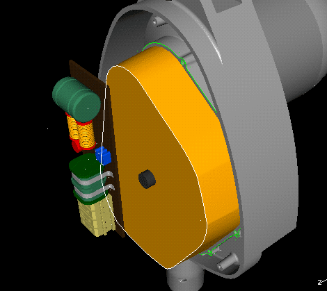
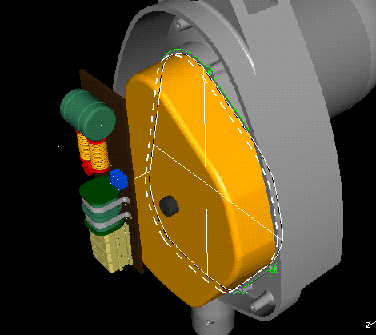
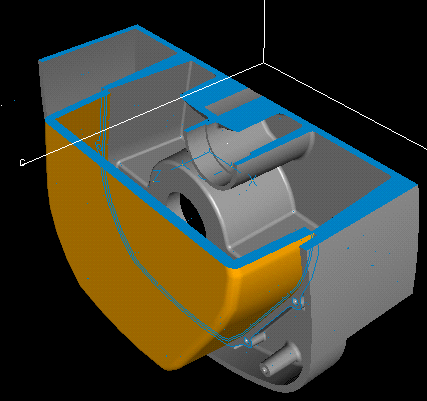

| Next Page | Previous Page | First Page |
Extrude the new outer section, Take default New_Part,


Fillet (either select the face or chain the edges) Radius = 5mm

Name this new part, Gear Housing



Shell the Gear Housing with wall thickness = 5mm, delete the rear face.
Master Modeler -> Master Assembly
 |
 |

From the Hierarchy, select the top level assembly (Electric Chain Hoist) and Hide everthing. Deselect, and select the Main Hoist Housing and Show this



Use the Dynamic Clipping to show the shell and fit to the Main Hoist
Housing.
Turn off the AB and BC planes before turning on the Clipping
Display.
Use the function keys to move the plane up and down.